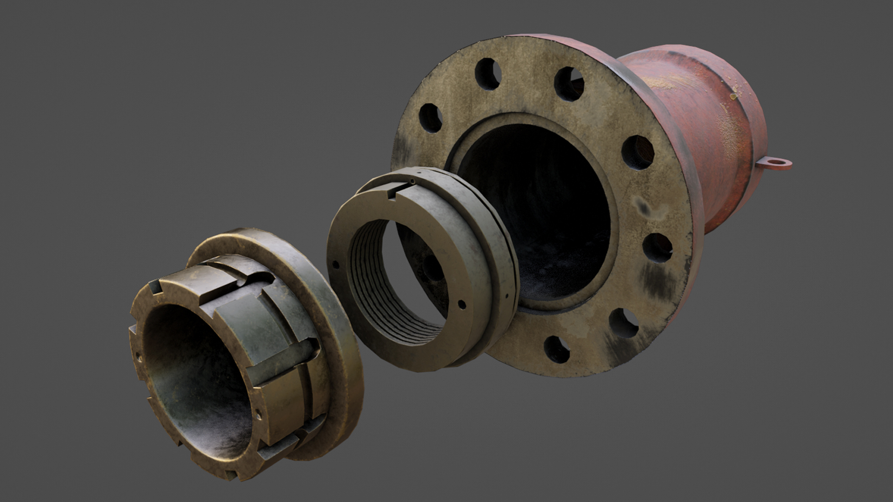

Fase 01
Herramienta de autor
Datasets, casos de uso y creación de escenas a partir de datos extraídos

Una experiencia inmersiva centrada en la representación de un entorno industrial y sus posibilidades de interacción en realidad virtual.
Este espacio recogerá el proceso de creación de escenarios, preparación de assets e integración visual de la aplicación.
Fase 01
Datasets, casos de uso y creación de escenas a partir de datos extraídos

Fase 02
Experiencia virtual para procesos y aprendizajes dentro de un astillero
Imagen de desarrollo pendiente
Fase 03
Aquí puedes describir esta fase del desarrollo, las decisiones tomadas y tu aportación al proyecto.